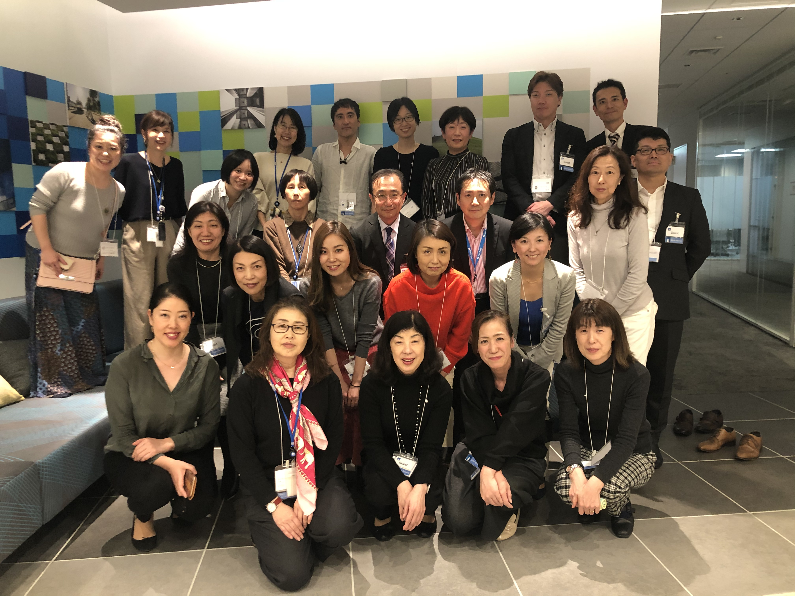
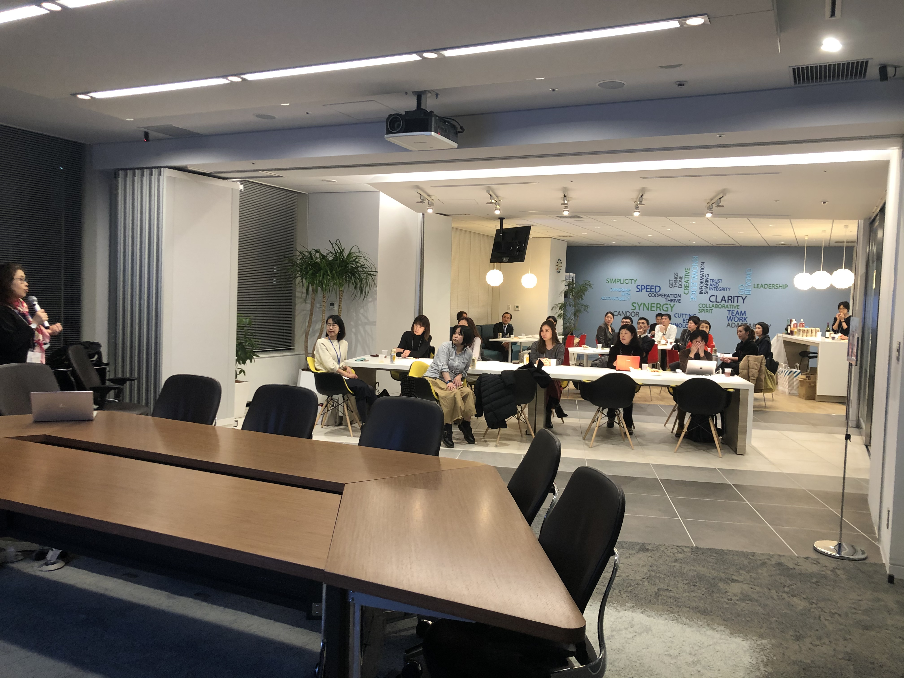

Women in Localization Japan 第21回イベント
日時：2020年2月14日(金)19:00 ～ 21:30
開催場所：ネットアップ株式会社 会議室

「こんまりはなぜアメリカでヒットしたのか – ローカライズの秘訣 ～コンマリ流とスタートアップの共通点～」
登壇者：Yasuko Katsumata / Kiyomi Mizusaki/ btrax, Inc.社（サンフランシスコからリモート登壇）
略歴：新卒で外資系製薬会社へ入社。社内ITの管理・運用からITによる働き方改善などに約3年間、従事。留学のために退職。アメリカ・サンフランシスコにてInternational Marketingの修士号を取得。 卒業後は、サンフランシスコのエクスペリエンスデザイン会社、btrax, Inc.に入社。 マーケティングスペシャリストとして大手企業のアメリカ進出マーケティング、ローカライゼーションなどを担当。
参考記事：https://blog.btrax.com/jp/konmari-localization/

「ローカリ部門のない会社で見えてきたLSPとのパートナーシップ」
登壇者：小野理恵 / ファイア・アイ株式会社
